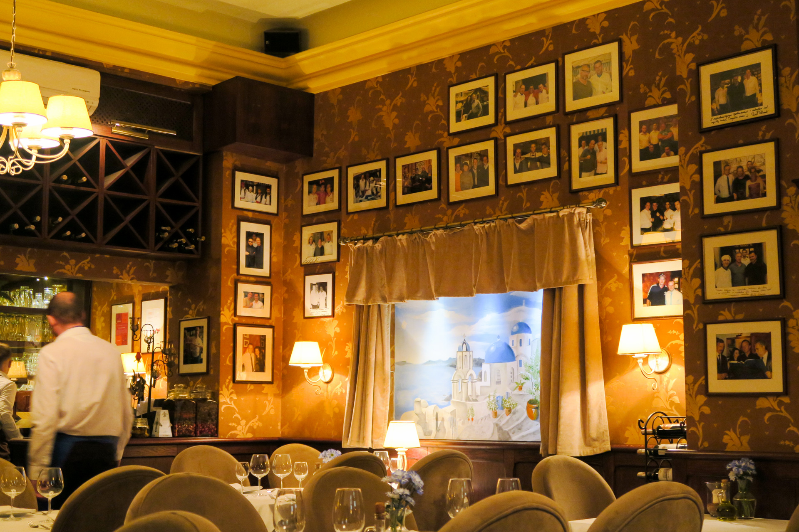

Przewodnik Gastronomiczny
Masala - Restauracja Hinduska
4,5
Masala to restauracja serwująca dania pochodzące z najludniejszego kraju świata - Indii. Mieści się ona na ulicy Kuźniczej przy samym rynku. Idealne miejsce dla kogoś, kto nie boi się pikantnych wrażeń z przygotowanymi daniami.
Restauracja Przystań & Marina
4,6
Restauracja Przystań & Marina to położona nad odrą ekskluzywna restauracja, która rozpieszcza klienta nie tylko smakami, ale i widokiem. Z tarasu i okien restauracyjnych wyglądamy na gmach główny Uniwersytetu Wrocławskiego oraz Mosty Uniwersyteckie.
Akropolis - Grecka Tawerna
4,4
Grecka restauracja położona tóż obok wrocławskiego ratusza. Znajdziemy w niej coś dla miłośników dań mięsnych jak i ważywnych. Każde danie jest starannie przyrządzane według greckich przepisów.
